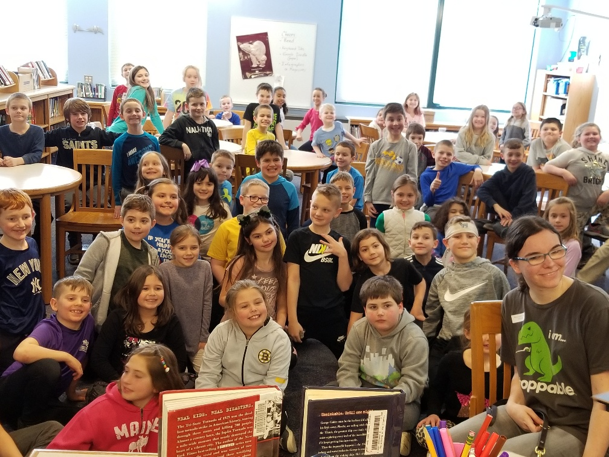
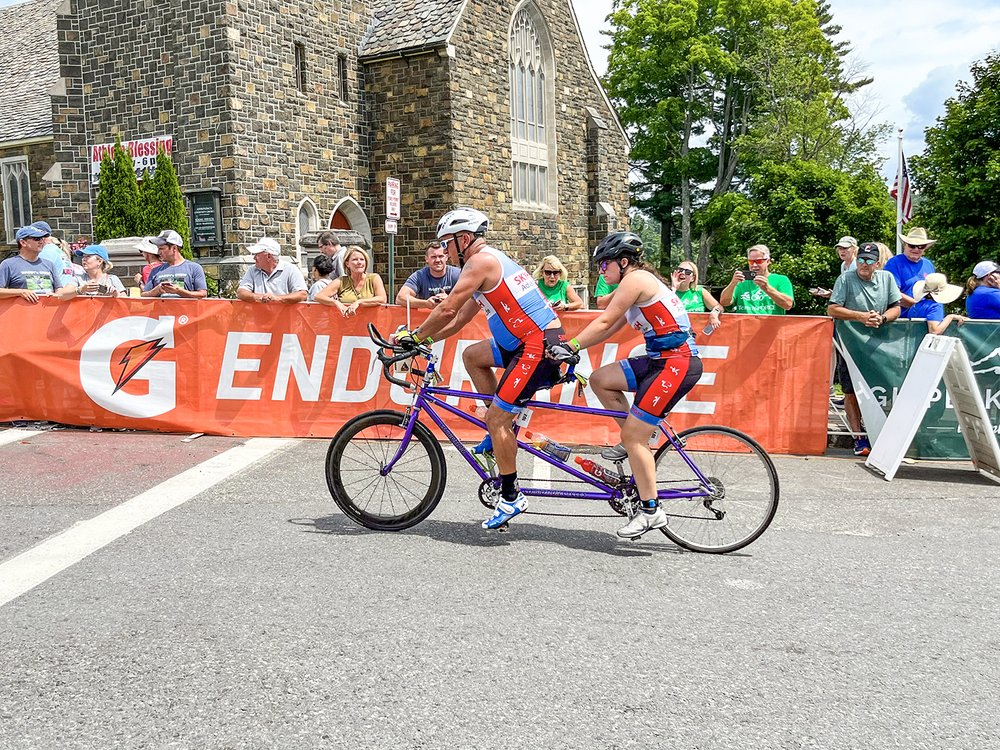
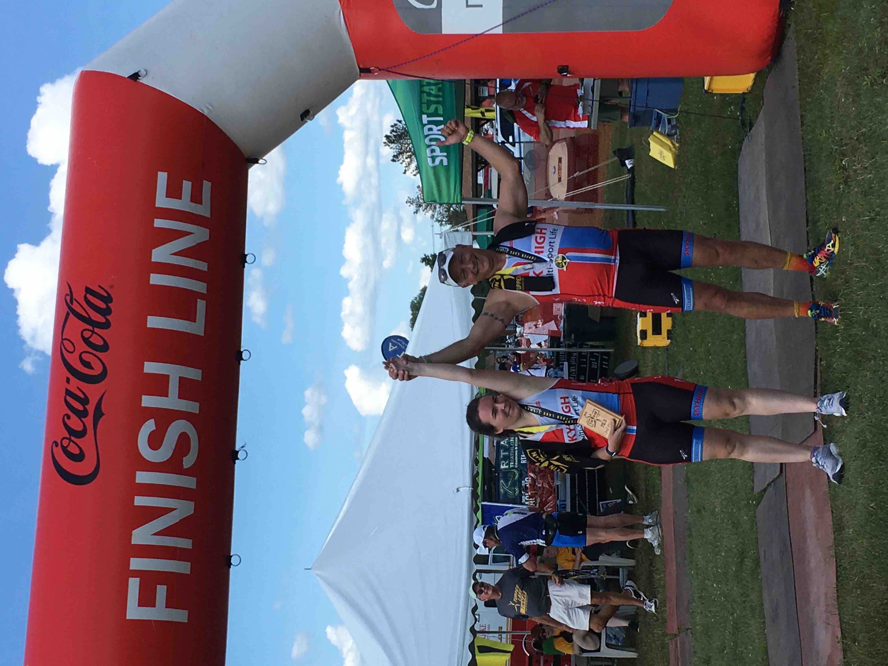

Age: 21
Education: Headed into senior year at SUNY Brockport
Family: Corinne (Mom), Bob (Dad), Ashley (32), Taylor (28) and Julie (17)
Home: West Sand Lake
Guide Dog: Hero (6) came to Megan on her 16th Birthday
Sports: Triathlon, Shot Put and Discus, Orienteering
I posted the following on Facebook after Ironman Lake Placid 2022. “Ironman isn’t for everyone. It is a challenge, it is a journey, it is rewarding,
it is frustrating, it hurts, it is elating, it is agony, it is a party, but it is possible!” But what if you were told ‘you can’t do that,’ ‘you’ll
get hurt,’ or ‘we can’t help you.’ That’s what Megan Hale heard until the summer of her 13th year. Born with a visual impairment resulting in no
peripheral vision and about 20/400 vision meant she can see basically nothing. It was at Camp Abilities in Saratoga Springs that she first heard
‘you can’ followed by ‘here is how.’ Camp Abilities Saratoga, a service project of Saratoga Springs Lions Club, is a one-week educational sports
camp for children and teens who are blind, visually impaired, and deafblind.
In just one week Megan gained the knowledge and confidence to join the Averill Park Track team as a middle school student. Bushwhacking new trails
in high school both athletically and academically, Megan headed off to Hudson Valley Community College to get a Physical Education degree. Inspired
by a PE teacher she planned to focus on Adapted Physical Education. At HVCC, during the pandemic, she was faced with educating faculty on how to work
with a blind student when most of their materials were visually oriented. As education of faculty in the first semester moved to collaboration in her
second semester, her GPA went from 3.8 to 4.0! Once the pandemic hit, her college track career was placed on hold.

After two years at HVCC Megan headed to SUNY Brockport to pursue a bachelor’s degree. Once again, she was in a position of educating those around her
in the Adapted Physical Education concentration. As the only student with a disability, she figured out what classes to take and how she could adapt
and help others adapt coursework and life on campus. Now Megan is talking about getting a master’s degree to teach the visually impaired, yet another
way she can empower others. As a counselor this summer at Camp Abilities, she tells the kids that they must learn to assert themselves, just as she has
done every day of her life.
John McDonald, a director of Saratoga Springs Lions Club, mentioned, “Megan began with Camp Abilities Saratoga as a camper in 2014. This year she‘s back
as a counselor, assisting another camper who is visually impaired. She’s sharing her experiences and knowledge with those younger than her that are also
faced with the challenge of being visually impaired. Congratulations on completing Ironman Lake Placid! It has been wonderful for all of us to witness
your growth as an inspiring young woman!”
We often talk about endurance sports as a journey. One in which you hit barriers and challenges, but when you focus on what you can control you move forward.
Every day Megan faces barriers and challenges that would stop most of us cold in our tracks. Yet she persists. On August 2, 2021, her birthday, Megan signed
up for Ironman Lake Placid. Her dad, Bob would tell people who frequented their family business, Bob’s Rental Center, that his daughter was doing Ironman Lake
Placid 2022. At first, he was surprised how many people in the community knew about the event and that it entailed a 2.4-mile swim, a 112-mile bike and a 26.2-mile
run. It was always at the end that he would add ‘and she is blind.’ When Megan told her mom that she wanted to do a triathlon, the response was ‘how can I help you?’
As she finished each triathlon on the way to Lake Placid her parents realized just how big an undertaking it would be to get to the finish line.
Megan had purchased a tandem bike that worked for her and her guide, but she quickly eclipsed her guide and needed someone faster and stronger. John Slyer of nearby
Averill Park, a 19-time Ironman veteran, triathlon coach and owner of SKYHIGH Adventures Youth Triathlon Camp, who had been coaching her (and her guide) fit the bill.
The three decided that John would become her guide and so much more. Training continued on a borrowed and adapted tandem, with tethers for the swim and run, made out of
running belts! Equipment for adaptive athletes is not readily available so jerry rigging is a must. Megan was used to running with her guide dog Hero and had used a hand
tether at Camp Abilities. She and John decided to use a waist tether to give Megan more freedom.

John says, “Megan is an easy person to coach. She never complains and works hard, really hard.” Going from zero to Ironman in a year is a challenge. John was up for it,
noting that Megan had the right goal – to finish. While she didn’t know the sport, she was willing and eager to learn. John’s mountain bike background came in handy working
with Megan on the bike. He would get her on the bike (they both clip in) and then get on himself. Being able to do a track stand was a skill he relied on often.
Megan and John both talked about the challenges of race day. Megan said, “the first lap was fun, but the second loop was tough.” Megan would say to John at the end of each
loop, “that was fun, can we do it again?” At one point on the bike, passing the entrance to Whiteface ski resort, John told Megan that she would have to pedal harder as he
was cramping in both thighs. She powered through and allowed him to recover. Later on, during the run Megan started to slow. John knew he needed to “motivate Megan without
overwhelming her.” After months of training together, he knew just how let her know they needed to pick it up to make the Ironman 17-hour cutoff time. Megan said as they
came onto the speedskating oval she heard her name being called out. It was so loud she couldn’t hear John, but could feel his hand on her back as she crossed the finish
line, and heard Mike Reilly call her name – “MEGAN HALE, YOU ARE AN IRONMAN!”
John told me that working with Megan “was a blessing.” Megan said, “I call John ‘dad’ and feel like I am one of his daughters now.” John wasn’t the only rock for Megan. Recent
SUNY Brockport graduate, Peter Rifenburg, 22, says, “Megan and I met at Camp Abilities Saratoga about five years ago. As an athlete, I am blown away by the work Megan has done
over the past year to get where she is today, and to have gone and done an Ironman it only makes me see the amount of work Megan has to do to be able to be on the same level as
our sighted competitors. Megan’s determination and character make her a real competitor.” He added, “To the average person, her achievement seems incredible, to pull off something
like that while having little usable vision is mind blowing. But to someone with a visual impairment or an athlete, or both in some cases, her accomplishment is nothing short of
incredible. And being on the journey is something I’m honored to have been a part of.”

Peter was also with Megan on Ironman morning helping her navigate packing bags, getting the final set up in transition, and heading over to the swim. Megan said that while John was
getting well-wished by his many friends in the triathlon community, she was thankful to have Peter by her side to let her know what was going on and where to go! I must add that Peter
is also visually impaired. He does not have enough vision to drive a car, but has decided to compete in Ironman as an age group athlete! Finishing Lake Placid in 12:29 he’s next headed
to Ironman Florida 70.3 in December and Ironman Texas next April. Anything is possible.
Everyone at Ironman Lake Placid saw Megan and John on the course in their SKYHIGH Adventures kits. The cheers bellowed extra loud as they went by and wet eyes followed them. Hero,
Megan’s guide dog, did not make the trip to Lake Placid. He did attend Tupper Lake Tinman in June. As Hero saw Megan coming to the finish line, he ran over to bring her home! Hero Hale
has his own Facebook page. Most yellow Labrador guide dogs are not trained to run, but Hero is a runner (his choice). The Freihofer’s Run for Women 5K has invited Megan and Hero to run
next June.
What’s next for Megan? She is quick to answer, “I’m thinking about Escape the Cape.” For those who don’t know, Escape the Cape Triathlon starts with a 12-foot jump off the Cape May-Lewes
Ferry. Megan’s goal is “to get more kids like me off the sidelines.” At 21, her focus, drive and persistence inspire anyone who gets the chance to interact with her. Megan will undoubtably
motivate and educate many, with and without challenges, that anything is possible.